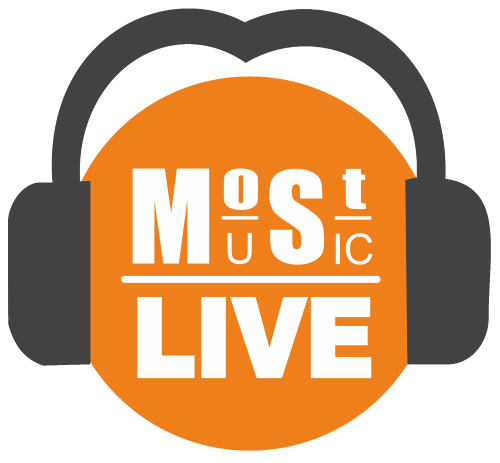

В ефірі зараз:
Program title
Program author
Information about the program which running on air now



Update Required
To play the media you will need to either update your browser to a recent version or update your Flash plugin.